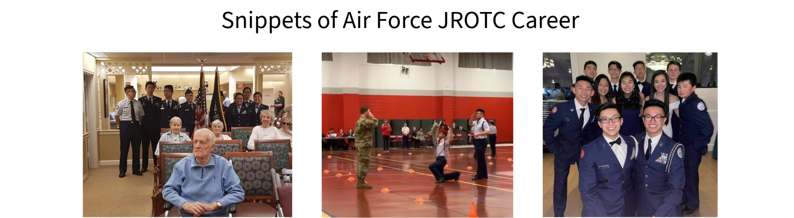
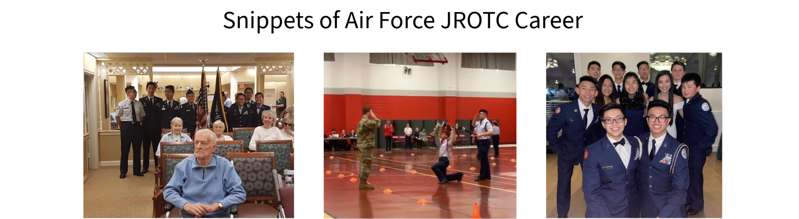

Pokemon Pomodoro Timer Here
This is my About Me
Hi. I'm Michael and this is my website. I would first like to say thank you for visiting as it means a lot that you've gained interest in me. I would not want to disappoint so let's dive right in to my world.
On this page you will learn about my academic life along with my general hobbies and interests.
If at any point you have questions or would like a more detailed view of certain aspects in my life, please do not hesitate to reach out to me via email: Michaelwmei09@gmail.com.
Without further ado, I present to you, Michael.
How We Got Here
From starting elementary school to the end of high school, I wasn't ever sure exactly what I wanted to do in life. All I knew was to study and to get better grades than I had last time in order to satisfy my parents. There wasn't much sense of purpose just yet.
Ever since starting my college applications during my senior year of high school, however, with the guidance from two brothers, I was sure I wanted to pursue a degree and career in computer science. Honestly, it didn't take much to decide on what I wanted to do -- just some Youtube videos showcasing the powers of developing a program.
Throughout college I was content, to say the least, about my decision back in high school. Thank you past-me! With the knowledge and skills that I've gained from most courses I can create more than I could have ever imagined before! So, now we're here. I write about my life in hopes to hear from someone that sees the beauty that I see in my upbringing.
A Passion of Mine
Throwback to middle school I realized that playing video games and bike-riding weren't the only forms of entertainment. It was then that I discovered an interest for volleyball. I wasn't exposed to the sport from YouTube videos or social media but I simply wanted to do something after school with my friends.
It didn't take long for this interest to turn into a passion and from passion to love. The sensation of "rolling" the ball over the net was addictive to say the least. I felt a rush everytime the ball made contact with my hand and at this point I was fairly new to the sport. Knowing that I could be so much better gave me more motivation to go to practices.
Fast forward to high school I maintained my love for volleyball. I would say that bumping and setting a volleyball became second-nature. I often looked back to see how much I improved which consistently fueled the urge to get, well, even better. I believe this drive to improve along with seeing others improve earned me the position as varsity captain in high school. Ever since, I have been playing from time to time in an open gym.
Serving my Community
My hometown is a place that I will forever indebted to for the love and kindness that its community holds. In order to pay them back, I enrolled in my school's Air Force JROTC program and some volunteering groups outside of school including Quincy Asian Resources Inc. With these groups of individuals who shared a similar goal as me, I was able to serve and give back to my community.
The AFJROTC program hosted events that amounted to over 1000 hours of community service. Throughout my four years as a cadet, I was lucky enough to experience both the satisfaction of helping groups of people, as well as leading service groups.
I hope this little snippet of my world has given you a sense of who I am. There is more to come with this page so please stay tuned. I am Michael and I thank you for taking your time to read about me. Godspeed.